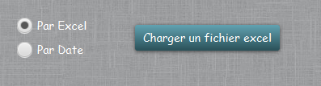
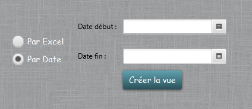

Création Vue MEP/TEP
Cette fonction permet de créer les vues de mise en production mensuelle et trimetrielle des composants. Il y a deux façons de les créer :
- En important un fichier Excel provenant d'une extraction de la PIC.

- En selectionant les dates de début et de fin de l'extraction.

Attention, les extractions doivent comporter les mises en production sur un mois ou sur 3 mois, il n'est pas possible de faire des vues pour d'autres durées.